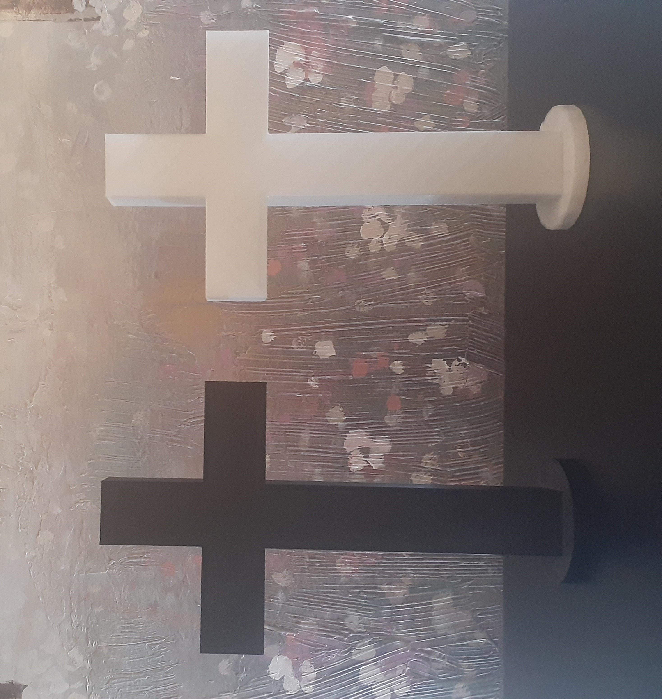

What you see here is a 10' Tall, 6' wide white & black cross. Constructed out of PLA, a common 3D-Printing material. It Has an addition of a circular base, created with the printing of the 3D-Print. The cost of such a cross is 20$ (each) and come in four colors; husker red, glow in the dark white, Pink, and Black. If you would like to look into this you can contact about possibly purchasing one or more of these contact me at (402)-641-9362 (Link in bottom left).